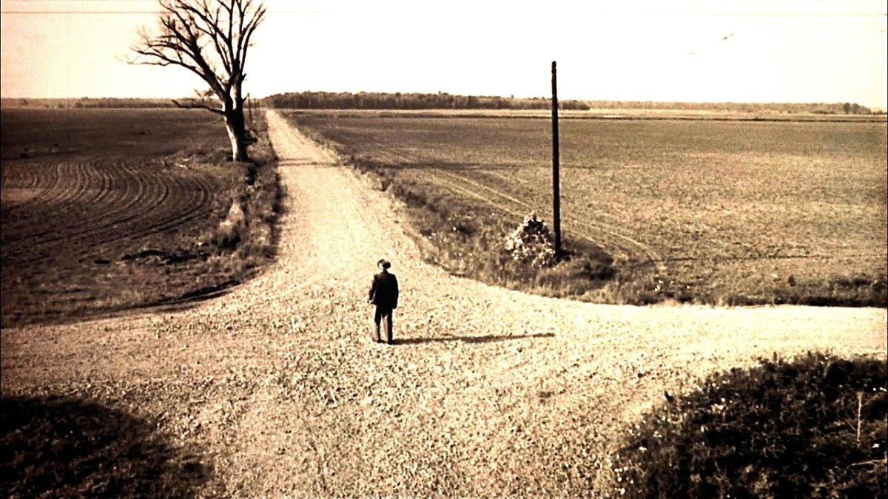
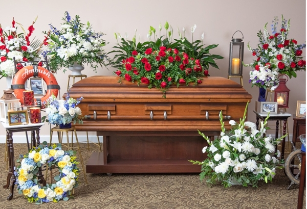
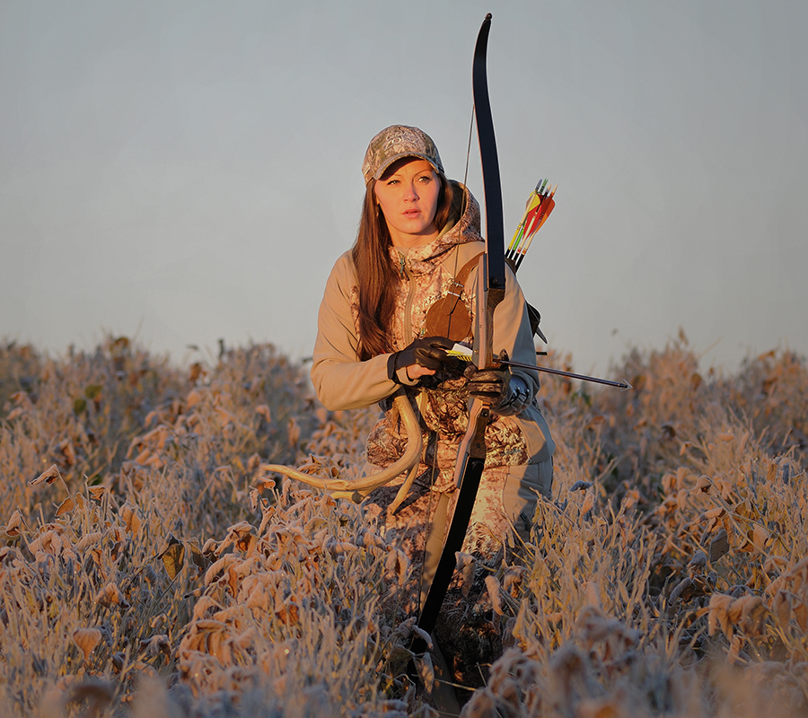
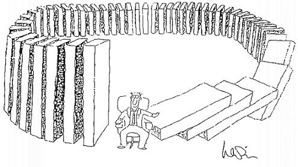

Mother Superior by Coheed and Cambria
[Verse 1]
Here, sleep
At the bottom of Hell
Your time has come to pick the road
You'll walk in this tale
Turned
And as a coward, you've learned
Through sickness and health, there's only one
Now go and bite your tongue
"
[Pre-Chorus]
- You'll just say the worst of me, with a hope they'll understand
- No, they know you're just a boy, so grow up and be that man
- Little baby, kick and you scream and whine
- Victims pay the price, eventually
- The cost? Let's see... your life
- You've got nothing to prove
- Stay afraid, young brother
- You've got nothing to prove
[Chorus]
- Your answer is in there, just stare down the barrel
- Your sincerest apologies won't write you out of this one
- Tonight, you'll find the right
- In the pull of the trigger, now bite
- Young fools
- Don't cry (Oh, oh)

[Verse 2]
A fear sleeps
Inside your stomach, it swells
A torn boy alone, in need of fix
And the pinch that cures the itch
For too long
This little baby's cried on
For tomorrow, we'll sing the words and song
Of a time we're glad's long gone

[Pre-Chorus]
- You'll just say the worst of me, with a hope they'll understand
- No, they know you're just a boy, so grow up and be that man
- Little baby, kick and you scream and whine
- Victims pay the price, eventually
- The cost? Let's see... your life
- You've got nothing to prove
- Stay afraid, young brother
- You've got nothing to prove
[Chorus]
- Your answer is in there, just stare down the barrel
- Your sincerest apologies won't write you out of this one
- Tonight, you'll find the right
- In the pull of the trigger, now bite
- Young fools
- Don't cry (Oh, oh)
[Bridge]
Mother Superior, come catch the rabbit, he runs
My how've you been?
You're frightened of leaving this truly gone-fishing amalgam
Go fetch your gun

[Chorus]
- Your answer is in there, just stare down the barrel
- Your sincerest apologies won't write you out of this one
- Tonight, you'll find the right
- In the pull of the trigger, now bite
- Young fools
- Don't cry (Oh, oh)
[Outro]
Not anymore, don't cry, boy
Not anymore, don't cry, boy
Not anymore, don't cry, boy
When you're sick to the stomach, just pull out the knife, oh no
Don't cry, boy
Not anymore, don't cry, boy
Not anymore, don't cry, boy
When you're sick to the stomach, just pull out the knife, oh no
